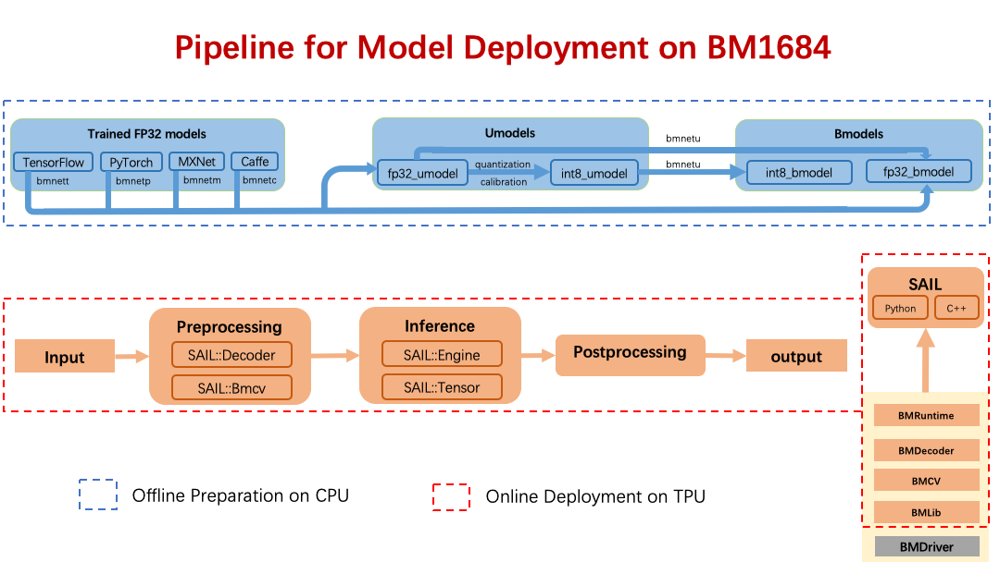

图解 Sophon Inference¶
Sophon Inference 是基于比特大陆原创深度学习开发工具包 BMNNSDK 开发的一套开源工具， 旨在帮助您快速地将模型部署于 Sophon TPU 上。(https://sophon.ai)
上图展示了使用 Sophon Inference 将深度学习模型部署到 TPU 上的流程。 下面我们将结合上图对一些基础概念进行解释。
模型部署¶
模型部署包含模型离线编译与在线推理两个步骤。
a).离线编译
该过程对应的是上图中蓝色部分。 假设用户已经获得了一个训练好的 FP32 精度的深度学习模型， 那么用户可以直接使用 BMCompiler 将该模型编译为 bmodel，这样生成的 bmodel 可以使用 TPU 上的 FP32 算力进行推理。 这里的 BMCompiler 是一个统称，它包含了四个前端工具，分别支持了四种深度学习框架框架。 bmnetc(caffe)，bmnett(tensorflow)，bmnetm(mxnet)，bmnetp(pytorch)。
用户如果希望使用 TPU 上的 INT8 算力进行推理， 那么可以先使用 Quantization & Calibration 工具将原始的 FP32 精度模型量化为 INT8 精度的模型， 再使用 BMCompiler 中的 bmnetu 工具将生成的 int8_umodel 编译为 bmodel。
bmodel 的生成不依赖 TPU，用户只需要按需求安装相应的 BMCompiler 和 Quantization & Calibration 工具即可完成该步骤。 理论上，一个深度学习模型，只要可以最终生成 bmodel，那么该 bmodel 就可以在 Sophon TPUs 上部署。
b).在线推理
该过程对应的是上图中红色部分中从 input 到 output 的过程。 用户可以基于 Sophon Inference 中的 SAIL 模块实现图像、视频的解码，张量的处理与运算以及 bmodel 的运算。
该过程需要在安装 TPU 与 驱动的环境下进行。
BMNNSDK¶
BMNNSDK 是比特大陆原创的深度学习开发工具包，主要由 Quantization & Calibration 工具、BMCompiler、BMDriver、BMLib、BMDecoder、BMCV、BMRuntime 等模块组成。 其中：
Quantization & Calibration 工具 ：是模型量化工具，它可以将您训练生成的 FP32 精度的模型量化为 INT8 精度的模型， 可以实现上图中将 fp32_umodel 转化为 int8_umodel 的过程。
在线文档链接：https://sophon-ai-algo.github.io/calibration_tools-doc/
BMCompiler ：是一组模型编译工具，它能将您训练好的深度学习模型编译成可被 Sophon TPU 加载并执行的指令集合， 并将这些指令保存到一个后缀名为 “bmodel” 的文件中。工具支持直接将 FP32 的模型编译为 bmodel， 也支持将经过 Quantization & Calibration 工具量化生成的 INT8 模型编译为 bmodel。
在线文档链接：https://sophon-ai-algo.github.io/bmnnsdk-doc/
BMDriver ：是 Sophon TPU 的驱动程序，采用 “insmod” 的方式安装到您的操作系统内核中。
BMLib : 是一系列底层接口，主要管理主机内存与 TPU 内存之间的交互。
在线文档链接：https://sophon-ai-algo.github.io/bmlib_1684-doc/
BMDecoder ：提供了一系列的基于 TPU 的图像、视频编解码接口。
在线文档链接：https://sophon-ai-algo.github.io/bm_multimedia/
BMCV ：提供了一系列的基于 TPU 的图像处理、张量计算接口。
在线文档链接：https://sophon-ai-algo.github.io/bmcv_1684-doc/
BMRuntime ：提供的接口可以将 “bmodel” 文件加载到 Sophon TPU 上并驱动 TPU 芯片实现推理。
Sophon Inference¶
Sophon Inference 目前主要包括上图中的 SAIL(Sophon Artificial Intelligent Library) 模块。 我们提供了python/c++的接口与示例程序，您可以根据您的需要选择合适的调用方式。
SAIL ：对 BMNNSDK 中的 BMLib、BMDecoder、BMCV、BMRuntime 进行了封装，提供C++/Python接口，可用于
a).驱动 TPU 对经过编译后的深度学习模型进行推理;
b).使用Sophon TPU做图像、视频处理;
在线文档链接：
中文：https://sophon-ai-algo.github.io/sophon-inference-doc_zh/
英文：https://sophon-ai-algo.github.io/sophon-inference-doc_en/